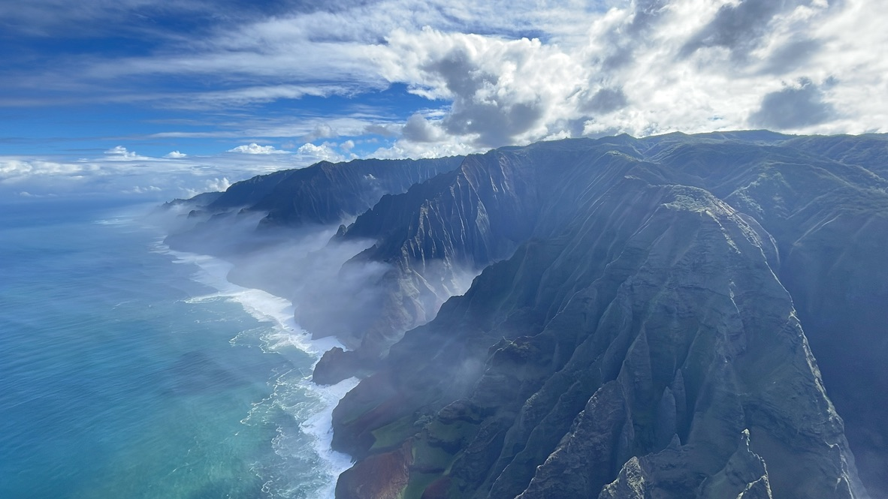
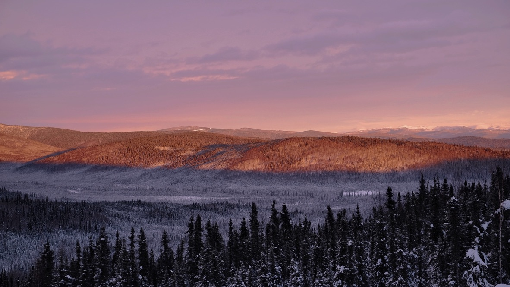
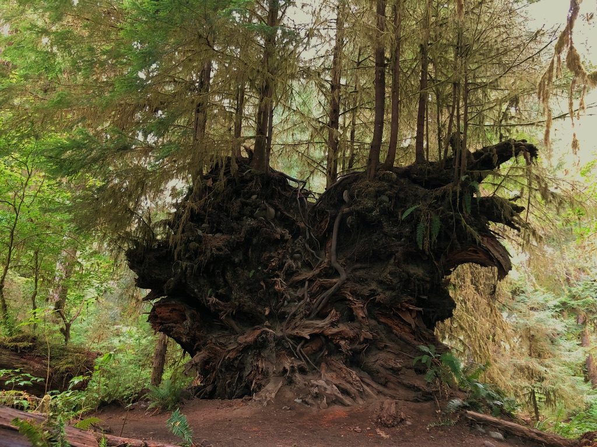
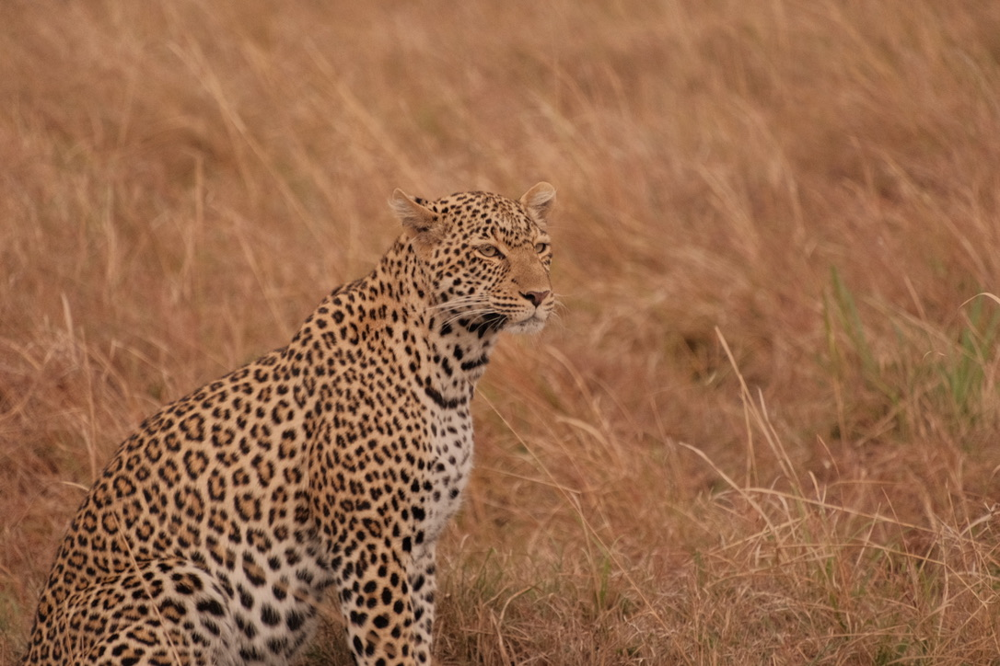
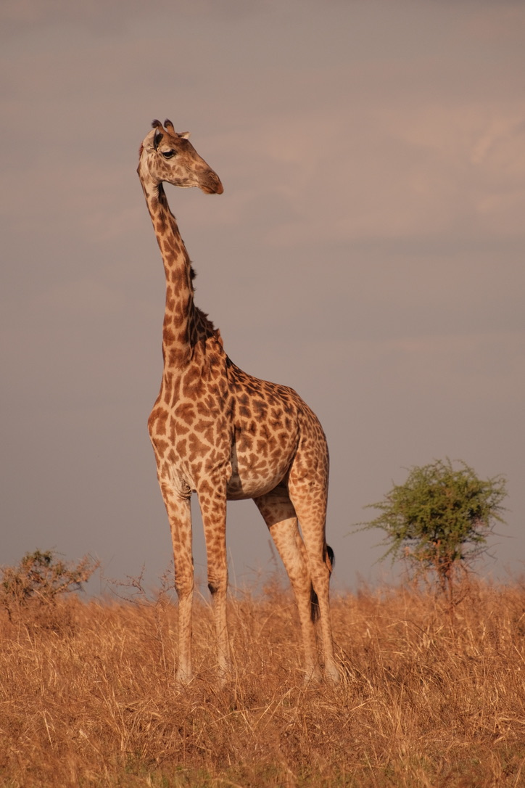
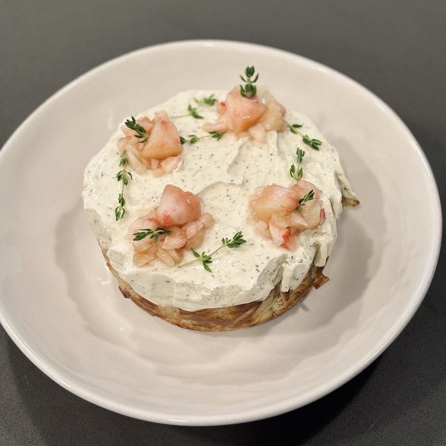
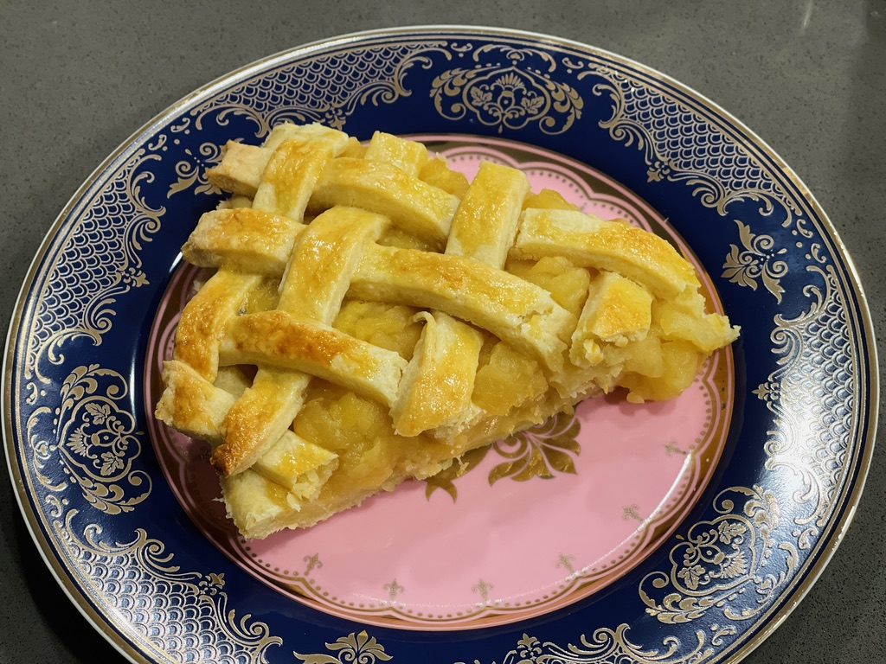
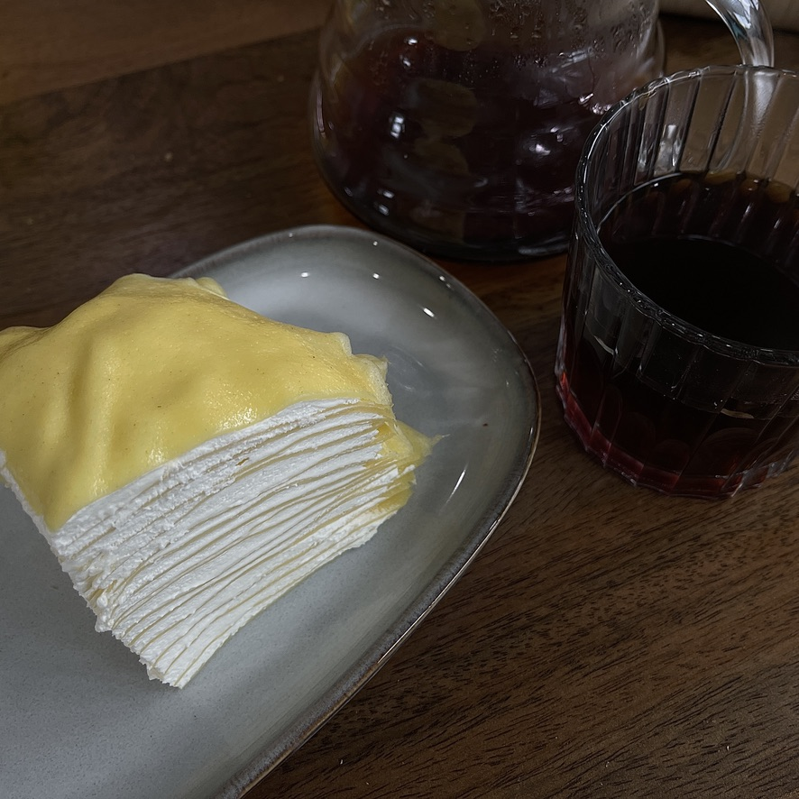
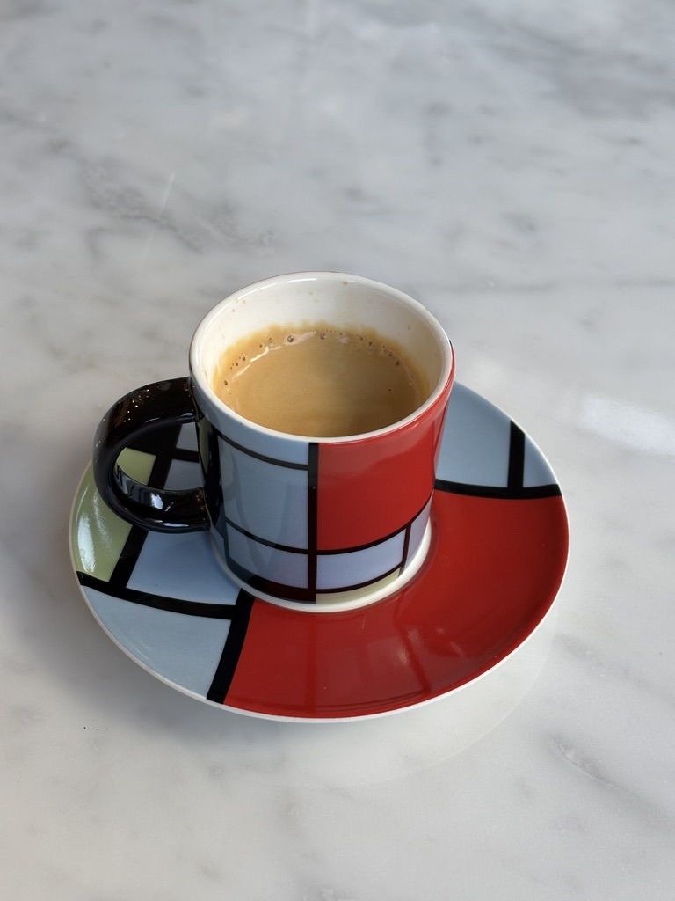
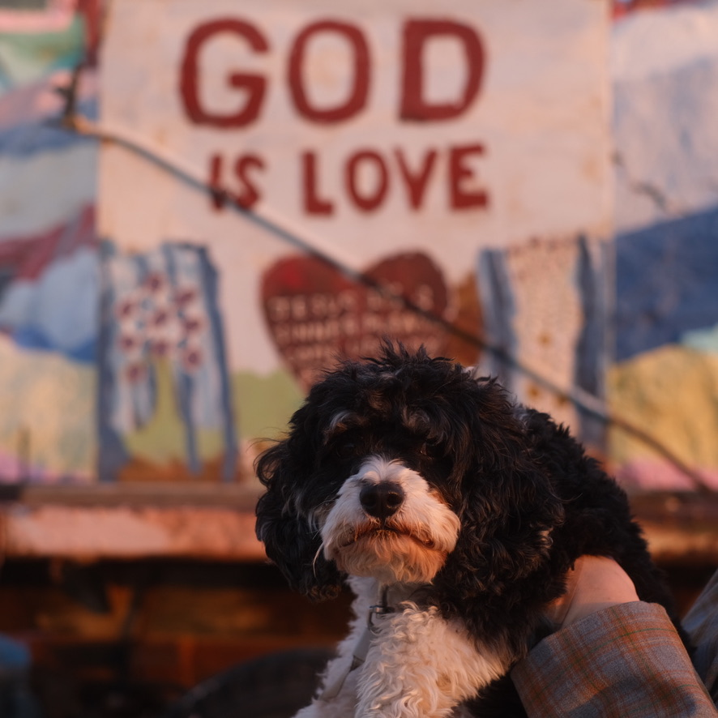

Think it, prove it, ship it. I design in systems, prototype in code, and let outcomes carry the load. Ambiguity is the brief; working software is the reply.
The path so far
2023 — now
Product Designer II · Veteran Benefits Guide, Seattle
First in-house designer; UX across B2C, internal tools & enterprise
2022 — 23
Product Designer · Anonymous Agent, Seattle
Cross-platform nano-influencer marketplace, zero to 900+ users
2022
UX Design Intern · Young & Hungry Creative, San Francisco
Nonprofit donation flows, +12.2% donor conversion
2021
UX Design Co-op · General Motors, San Francisco
Immersive storytelling for GM’s 2039 vision
Education
M.A. Interaction & UI/UX Design · Academy of Art University
B.F.A. Digital Arts · Zhejiang University of Technology
Me, as myself
The real me lives off the clock.
On the road











BAKING





Coffee, always



MY DOG, CHEWIE


Growing roses, lately